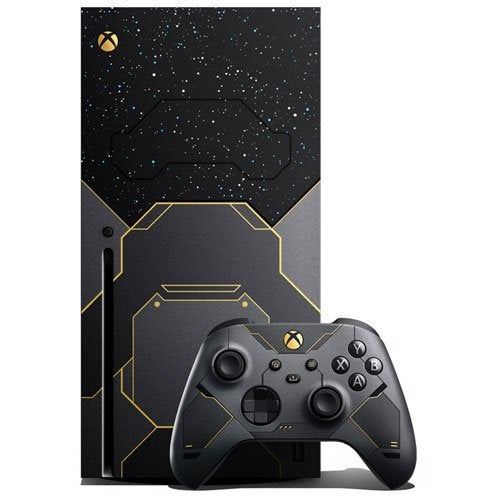

Pro Xbox argument
Brodys Pro XBOX
There are many reasons why i'm pro XBOX That will follow below.

I belive the consoles user interface is alot more clean and well developed (based on window 10 layout).
The Console it self is alot more simple looking and will age better than the playstation 5 and XBOX's controller is also alot more comfortable.
Moving into the specs of the console although they are both very similar the XBOX does have
better specs on paper which adds a little bit more to the xbox side of things.
Xbox also has better exclusive titles starting with Dead Rising the best know zombie slayer game.
Moving deaper into exclusives XBOX offers Gears Of War/Forza and one of the best
franchises of all time
HALO nothing can compare to the list of smaller studio exclusives xbox has aswell.
Click here to see the list
XBOX's Gamepass service is also one of the best services you can be offered for a
monthly price. To back my claim some of the upcoming games that are set to launch on gamepass
are the new Forza Horizon (nov release) and the new HALO infinite online multiplayer
which you will be able to download for no initial cost ig you have Gamepass.
Overall I belive that XBOX is the brand of choice for console users